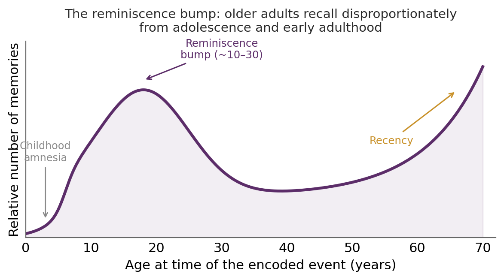
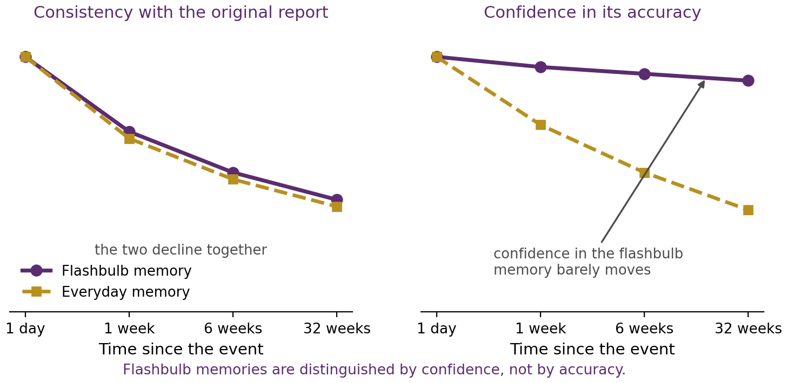
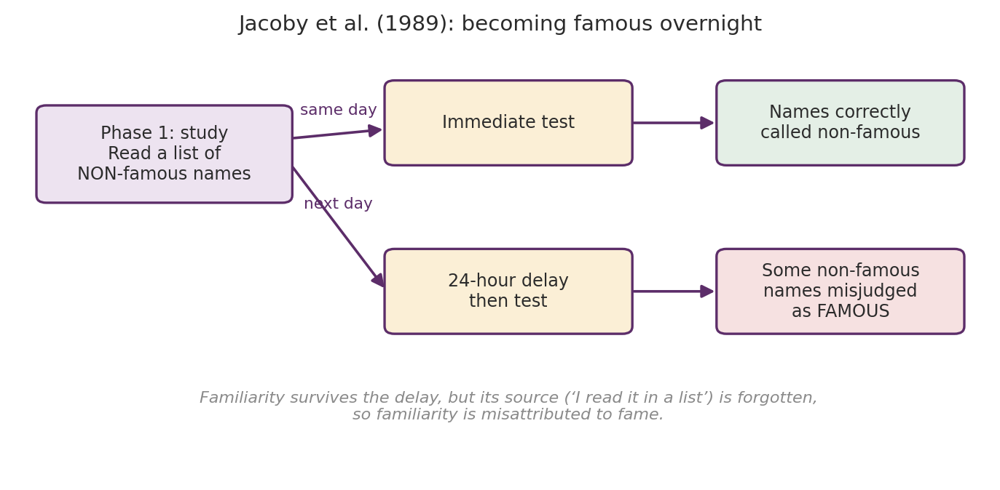
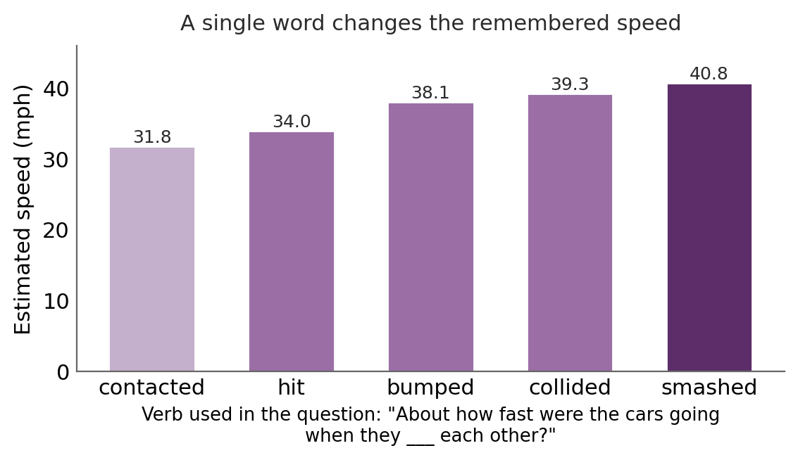
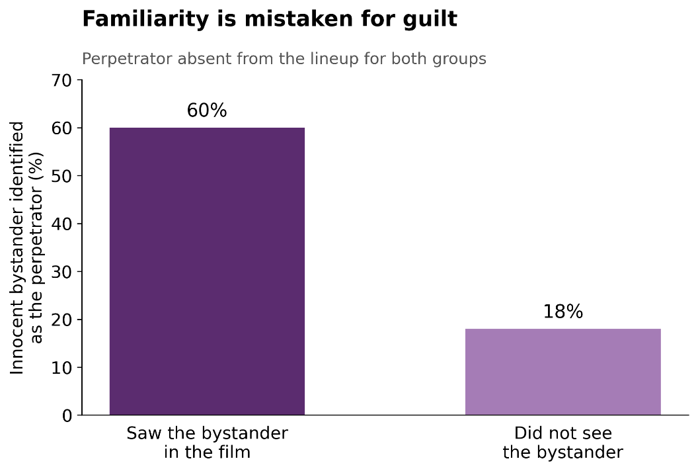

Chapter 6
Everyday Memory and Memory Errors
Where this chapter sits
Chapter 5 was about the machinery of memory: how information is encoded, retrieved and consolidated. It ended with reconsolidation, and with the discovery that a retrieved memory can, under the right conditions, become open to change again. That finding sets up this chapter, because it means the past you remember is not a record you consult but something you rebuild, and rebuild slightly differently each time.
Here we watch memory doing its real job, out in the world, where it must reconstruct the past from partial traces, current knowledge and expectation. The theme that has run quietly through the last two chapters now moves to centre stage: remembering is reconstructive, not reproductive. The same processes that make memory efficient and meaningful also make it systematically fallible, and the two cannot be separated. You do not get an accurate memory system by removing the machinery that distorts it, because that machinery is what makes memory work at all.
We begin with the memories most central to who we are, then examine why memory errs, then follow those errors into the highest-stakes setting we have, the courtroom, and finally into the information environment that surrounds all of us every day.
Learning objectives
6.1 Autobiographical memory
Autobiographical memory is memory for the events and facts of your own life. You met its components in Chapter 4: it is a hybrid, partly episodic, as when you relive your eighteenth birthday, and partly personal semantic, as when you know the date you were born without reliving anything. There we also met semanticisation, the drift by which older memories keep their content and lose their episodic character. This chapter takes the same system and asks what it is like in practice, where it is strongest, and where it fails.
Two features make it distinctive. First, it is multidimensional. Recalling a personal event recruits a broad network of brain regions rather than a single store, because the original experience bundled together vision, sound, emotion, place and self, and retrieving it means reassembling that bundle. Second, autobiographical memories are generally stronger and more durable than laboratory memories, because they carry emotion and personal relevance.
A neat demonstration of the neural side compares a person's memory for their own photographs against photographs taken by someone else in the same places. Recalling one's own photographs produces stronger activity in the medial prefrontal cortex and the hippocampus, as well as in visual and parahippocampal regions, than recognising someone else's photographs of the same locations (Cabeza et al., 2004). Note what is controlled here: the locations are the same, so the difference cannot simply be about what was photographed. What differs is whether the memory is yours. The self-relevant memory is not merely more vivid to introspection; it is measurably more engaging to the brain.
Because autobiographical memory and the sense of self are so tightly bound, as §4.4 argued, disorders that erode it erode identity. In dementia, particularly Alzheimer's disease, the progressive loss of autobiographical memory strips away not just facts but the narrative a person uses to know who they are. This is a useful reminder that memory in this chapter is not an abstraction to be tested in a laboratory; it is the scaffolding of a self.
6.2 The reminiscence bump
Ask older adults to recall memories from across their whole lives and the memories are not spread evenly. Three regions stand out. There is almost nothing from the first few years, the period of childhood amnesia. There is a great deal from the recent past, which is unsurprising. And there is a pronounced excess of memories from roughly ages ten to thirty, the reminiscence bump (Rubin et al., 1986; Figure 6.1).

The same window shows a youth bias for public events: the news people rate as most important tends to be the news of their own adolescence and early adulthood, which is worth remembering the next time someone tells you that nothing significant has happened since their twenties.
Why should this window be privileged? Three hypotheses compete, and the useful exercise is not to pick one but to ask what evidence would separate them.
The self-image hypothesis. Adolescence and early adulthood are when we form a stable self-image, and events that shape who we are becoming are encoded especially well and rehearsed thereafter. The prediction is that the bump should track identity formation rather than age as such.
The cognitive hypothesis. Encoding is best during periods of rapid change followed by stability, when many experiences are novel and distinctive. This prediction is the sharpest of the three, because it says the bump should move if the period of upheaval moves.
The cultural life-script hypothesis. Cultures carry shared expectations about when major life events should happen, such as leaving home, a first job, or marriage, and most of these scripted milestones fall in the bump window (Berntsen & Rubin, 2004). The script gives retrieval a ready-made structure to hang memories on, so the bump would be partly a retrieval phenomenon rather than an encoding one.
The cognitive hypothesis has the most striking direct support, because it made the riskiest prediction and passed it. In people who emigrate in adulthood, the bump moves to the age at immigration (Schrauf & Rubin, 1998), because that is when the flood of novelty occurred. The cultural script did not change and, for most of these immigrants, identity formation had largely run its course; what moved was the period of rapid change, and the memories followed it. The life-script hypothesis has distinctive evidence of its own, however: the bump appears for happy and important memories but not for sad or traumatic ones (Berntsen & Rubin, 2002), which fits a script made up mostly of positive, culturally expected milestones but is not what the cognitive hypothesis predicts. So no single account has won, and the three are not mutually exclusive: the bump may well be overdetermined, with distinctive encoding, identity formation and a retrieval scaffold all pushing in the same direction.
6.3 Flashbulb memories
Some events are seared in as a vivid recollection not of the event itself but of how you heard about it: where you were when you learned of a national tragedy or a shocking result. Brown and Kulik (1977) called these flashbulb memories, by analogy with a photograph that captures a whole scene in an instant.
They are favoured by the same factors that favour any strong memory, concentrated together: the event is highly salient, personally relevant, and emotional. Emotion is where the amygdala re-enters the story. As §4.6 established, the amygdala does not store emotional memories so much as tune how strongly they are consolidated elsewhere, and that modulation is what stamps in the surrounding detail. The narrative rehearsal hypothesis adds a second mechanism: we tell and retell the story of a shocking event, and each retelling is a rehearsal that consolidates it further.
Hold both mechanisms in mind, because together they set up a paradox. An event can be stamped in with great vigour, and rehearsed many times, and still be no more accurate than an ordinary one. Indeed, §5.8 gives a reason to expect rehearsal to make matters worse: each retelling may reopen the memory and re-store the version just told. That is a plausible mechanism rather than a demonstrated one, but it fits the evidence that follows.
Vivid is not accurate
The intuitive view is that flashbulb memories are a special, photographically accurate kind of memory. The evidence says otherwise, and this is the critical point the third learning objective asks for.
Talarico and Rubin (2003) recorded students' memories of hearing about the September 11 attacks the day after the event, alongside memories of an ordinary event from the same period, then re-tested each participant once, 1, 6 or 32 weeks later. The design is what makes it work: because both kinds of memory were recorded at the same time and tested on the same schedule, the flashbulb memory has a matched comparison rather than being judged against intuition. Two things happened. Consistency with the original report declined over time for the flashbulb memory at much the same rate as for the everyday one. But confidence in the flashbulb memory stayed high while confidence in the everyday memory fell away (Figure 6.2).

So flashbulb memories are characterised by confidence, not by consistency. They are not fundamentally different from other memories in accuracy; they only feel different, because they are vivid and we are certain of them. The gap between how right we feel and how right we are is the single most important idea to carry into the rest of this chapter, and it is the reason the courtroom material in §6.6 is so troubling.
6.4 The constructive nature of memory
If memory reconstructs rather than replays, what does it build from? A useful shorthand: what you remember is a blend of what actually happened, your prior knowledge and expectations, and information that arrives after the event. Each ingredient is normally helpful. Each is also a route to error, and the errors are not random noise but systematic consequences of a system working as designed.
Schemas and scripts
A schema is an organised packet of knowledge about how some part of the world usually works; a script is a schema for a sequence of events, such as what happens when you eat at a restaurant. Schemas make encoding efficient by letting us store the gist and fill in the routine, but they also insert things that were expected rather than experienced.
Bartlett's (1932) classic demonstration had British participants repeatedly recall an unfamiliar Native American folk tale, The War of the Ghosts. With each retelling the story drifted towards their own cultural expectations: canoes became boats, unfamiliar supernatural elements were dropped or rationalised into something more familiar. People remembered the story their schema led them to expect, not the one they had read. The lesson is not that schemas are bad, but that the same structure which aids memory quietly reshapes it.
A laboratory version of the same principle is worth knowing because it is so easy to experience. Study a list of words that are all related to one another, and you will often be confident that you saw a closely related word that was never actually presented. The unpresented word fits the gist of the list so well that it is generated from it, and the sense of having seen it is indistinguishable from the sense of having seen the real items. That is worth pausing on. The false memory here is not a lapse of attention or a guess under pressure. It is produced by exactly the machinery that lets you extract the meaning of a list rather than a string of unrelated sounds.
Inference: filling gaps we never saw
We routinely go beyond the information given by drawing pragmatic inferences, and then remember the inference as if it had been stated. Told that the karate champion hit the cinder block, people later recall that he broke it. Read that the baby stayed awake all night and you may later remember that the baby cried all night. The inference is reasonable, usually helpful, and not what was actually said. Memory fills the gap and then files the filling alongside the facts, with no tag to mark which was which.
Source monitoring: right memory, wrong origin
Often the content of a memory is perfectly intact and we misremember where it came from. Source monitoring is the process of attributing a memory to its origin, and it fails more readily than we assume. Jacoby and colleagues' (1989) becoming-famous-overnight experiment is the elegant demonstration. Participants read a list of non-famous names. Tested immediately, they correctly rejected these as non-famous. But tested a day later, some of the same non-famous names were now judged famous (Figure 6.3).

Follow what has happened, because it is the template for most of the rest of the chapter. The familiarity produced by having read the name survived the delay. The source of that familiarity, which was “I saw it in that list yesterday”, did not. Left with a feeling of familiarity and no account of where it came from, participants attributed it to the most plausible available source: the name must be famous. Source monitoring does not fail by losing the memory. It fails by keeping the memory and losing its label.
Two further effects are variants of the same failure. The sleeper effect occurs when a claim from an unreliable source becomes more persuasive over time, because we forget the source that once let us discount it. And the illusory-truth effect is the finding that mere repetition makes a statement feel truer (Hasher et al., 1977): each exposure builds processing fluency, and we misread that ease as evidence of truth.
You have met this second effect already, under a different name. In §4.5 it appeared as the propaganda effect, one of the forms of priming, and the point made there was that it survives an explicit warning that the material may be false. The two names describe the same mechanism from different angles: “propaganda effect” emphasises the deliberate use of repetition, “illusory truth” the resulting feeling. What matters is the mechanism, and it is worth stating plainly. A lie repeated often enough does not need to defeat your reasoning. It only needs to become familiar.
6.5 The misinformation effect
If post-event information blends into memory, then information delivered after an event can rewrite it. This is the misinformation effect, the body of work most associated with Elizabeth Loftus.
In the classic study, Loftus and Palmer (1974) showed people a film of a car accident and then asked how fast the cars were going when they hit each other. For other participants the verb was changed to smashed, collided, bumped or contacted. The single word shifted the remembered speed (Figure 6.4). More strikingly, a week later, people who had heard smashed were more likely to remember broken glass that had never been in the film. The question had not merely measured the memory; it had altered it, and the alteration outlasted the session.

The effect is robust and requires no intent to deceive. A stop sign recalled as a yield sign after a misleading question (Loftus et al., 1978), or the definite article in “did you see the broken headlight?” rather than “a broken headlight?” (Loftus & Zanni, 1975), reliably contaminates memory. Notice how small these manipulations are. Nobody is being lied to; a questioner is simply presupposing something, and the presupposition is absorbed.
It is worse when the misinformation comes from another person. When two witnesses to the same event talk before being questioned, each can implant details into the other's memory, and in one laboratory co-witness study, accuracy was around 79 per cent for details the pair had not discussed but only around 34 per cent for details they had (Garry et al., 2008). This is why witnesses should be separated, and why “we talked it over to get our story straight” is the opposite of reassuring.
Lindsay (1990) identified the condition under which misinformation does most damage, and it places the whole phenomenon inside source monitoring. He varied how easily the misleading source could be distinguished from the original event: how close it was in time and how similar the conditions under which it was presented. Participants were also told that nothing in the misleading narrative was a correct answer, so any suggested detail they still reported had been misattributed to the event itself. When the two were hard to tell apart, participants reported the suggested detail on 27 per cent of misled items against 9 per cent of control items; when the misleading information was delivered two days later and under clearly different conditions, the difference all but vanished (13 against 10 per cent). That second group had heard the misleading details most recently and should have recalled them best, yet they were the ones least misled. So misinformation does not overwrite memory by brute force. It does its damage when we cannot tell where a detail came from, which is the same vulnerability that made non-famous names famous overnight.
6.6 False memories and eyewitness testimony
The processes above can do more than edit details; they can manufacture whole events. In the lost-in-the-mall studies, suggestive interviewing led about a quarter of participants to remember, sometimes in rich detail, being lost in a shopping centre as a child, an event that had never happened (Loftus & Pickrell, 1995). Once formed, such false memories are difficult to distinguish from true ones, either by the person holding them or by an observer. That last point is the one with consequences, and it matters most in one setting.
Eyewitness testimony carries great weight in court, on the reasonable-seeming assumption that memory can be trusted. Everything in this chapter should make you cautious about that assumption. Several well-documented factors degrade eyewitness accuracy, and it is worth noticing that each one is an instance of a mechanism you have already met.
Weapon focus. When a weapon is present, attention is drawn to it at the expense of the perpetrator's face, so identification of the culprit suffers (Loftus et al., 1987). This is the attentional bottleneck of Chapter 2 doing its ordinary work at the worst possible moment.
Familiarity errors. An innocent bystander who was simply present can be misidentified as the perpetrator, because their face is familiar and the source of that familiarity has been lost. This is source monitoring failing in the witness box.
Suggestion. Leading questions and the misinformation effect operate on witnesses exactly as they do in the laboratory, reshaping what is remembered.
Confirming feedback. After a witness picks someone, telling them “Good, you identified the suspect” inflates their retrospective confidence, and also their reports of how good their view was and how much attention they had paid. Wells and Bradfield (1998) named this the post-identification feedback effect.
Ross and colleagues (1994) demonstrated the familiarity error directly, and the design is worth following. Participants saw a film in which a robbery was committed. For one group, an innocent man had appeared earlier in the film, reading to a group of students; for a control group, he did not appear. Both groups were then shown a photo spread from which the actual robber was absent but the innocent man was present. Witnesses who had seen him in the film identified him as the robber around 60 per cent of the time. Witnesses who had never seen him picked him about 18 per cent of the time (Figure 6.5).

The comparison is the point. Both groups faced the same faces in the same lineup; the only difference was whether one of those faces had been seen before, in an innocent setting, and that prior exposure more than tripled the rate at which he was chosen. The witnesses were not incompetent. The error appears when the correct answer is missing and a familiar face is present, because a lineup invites you to choose and familiarity is the only signal available. That is a predictable consequence of how memory works, not a failure of diligence, which is why the remedy has to be procedural rather than a matter of trying harder.
The Wells and Bradfield finding deserves the same attention, because it inverts something juries rely on. Confidence is treated as a proxy for accuracy. But confirming feedback raises confidence without touching accuracy, which means the confidence a witness expresses in court may have been manufactured after the identification was made, by the very people whose case it supports. A confident witness is not necessarily a reliable one, and may be confident precisely because someone told them they were right.
6.7 Improving eyewitness testimony
The legal system cannot fix poor viewing conditions or the fallibility of human memory, but it can stop making things worse. Decades of research yield a clear set of procedural safeguards, and each targets a specific mechanism from this chapter rather than exhorting witnesses to be careful.
Warn the witness that the perpetrator may not be present. Without this instruction, witnesses treat the lineup as multiple choice and pick whoever best matches their memory, even when the culprit is absent. This directly targets the bystander error that Ross and colleagues demonstrated.
Use fair lineups with suitable fillers. The suspect should not stand out, and the fillers should match the witness's description, so that nobody is chosen simply for being different from the rest.
Use a blind, ideally double-blind, administrator. If the officer running the lineup does not know who the suspect is, they cannot steer the witness or deliver confirming feedback, even unintentionally. This targets the post-identification feedback effect at source.
Improve the interview. The cognitive interview (Fisher & Geiselman, 1992) uses techniques such as reinstating the context of the event and recalling it in different orders to draw out accurate detail without leading the witness. Note that reinstating context is encoding specificity from §5.5, put to work in a police station.
A reform that needed revising
One popular safeguard deserves a careful treatment, because it shows the field correcting itself. It was long argued that presenting lineup members one at a time, a sequential lineup, is safer than showing them all at once, a simultaneous lineup. The reasoning was that a simultaneous lineup encourages witnesses to pick whoever is the closest relative match, whereas a sequential one forces an absolute judgement about each face in turn. This was the sequential-superiority effect, and it was written into policy in many jurisdictions.
The picture is now more nuanced. Applying signal-detection models to a large body of data, Kaesler, Dunn, Ransom and Semmler (2020) found that sequential lineups make witnesses more conservative about when they choose at all, but produce little or no improvement in underlying discriminability, which is the actual ability to tell a guilty face from an innocent one. The sequential procedure mainly shifts the decision criterion rather than sharpening the memory. Other signal-detection analyses go further and find a modest discriminability advantage for simultaneous lineups (Mickes et al., 2012). The two camps disagree about whether sequential lineups are slightly worse or merely no better, but neither now finds the advantage the reform was built on.
Take the distinction seriously, because it is one of the most transferable ideas in the unit. A procedure that makes witnesses choose less often will reduce false identifications, which looks like an improvement, but it will also reduce correct identifications, because both follow from the same reluctance to commit. Only a change in discriminability means witnesses are actually distinguishing better. Separating a genuine change in sensitivity from a mere change in response bias is exactly the kind of distinction cognitive psychology exists to make, and getting it wrong here meant years of confident policy advice resting on a misread result.
6.8 Prospective memory
Everything so far concerns retrospective memory, memory for the past. Prospective memory is memory for the future: remembering to carry out an intention at the right moment. Chapter 4 noted that it fits nowhere in the taxonomy of long-term memory, which is part of what makes it interesting. It is also where memory most visibly meets everyday life, and its failures, such as missing a dose or forgetting to pass on a message, are both common and consequential.
An intention runs through a sequence of stages, and it is worth laying them out, because a prospective memory can fail at any one of them and the remedies differ. You encode the intention together with the action it requires. You then hold it across a retention interval while doing other things entirely. During the performance interval you must notice that the right moment has arrived, which is the stage that most often fails. You then initiate and execute the action. Finally you evaluate whether it went to plan, which is what allows you to set up a better reminder next time.
Time-based and event-based intentions
The key distinction (Einstein & McDaniel, 1990) is between time-based and event-based prospective memory, and it is a distinction about where the cue comes from.
A time-based intention must be carried out at a particular time: take the medication at eight in the evening. You decide on the action, hold it through a day of other activities, and must then notice the moment yourself, because nothing in the environment will announce it. You check the clock, see that it is eight, and act. Afterwards you may reflect that you nearly forgot and resolve to set an alarm. That last step is the interesting one, because it is a repair to the task rather than to yourself.
An event-based intention is triggered by something in the world: give your friend the message when you next see them. The structure is the same, but the performance interval now contains a cue. You go about your day with the intention in the background, and the sight of your friend retrieves it for you. The world does part of the remembering, which is why event-based intentions are generally easier than time-based ones.
The practical implication follows directly, and it is the same move as the alarm above: convert time-based intentions into event-based ones by installing an external cue. A note on the door, an alarm, or a tablet box left beside the kettle all work by the same principle, which is to stop relying on self-initiated monitoring and let the environment supply the trigger. In the terms of this book, it is a way of handing a task from the Rider to the Elephant.
6.9 Application: misinformation, media and the mind you did not choose
The mechanisms in this chapter were mostly discovered in laboratories and courtrooms, but they operate on all of us, all day, through the information environment we live in. Recall the dual-system framing of this book, the deliberate, reasoning Rider and the fast, automatic Elephant. Much of what shapes belief online bypasses the Rider entirely and works on the Elephant, which is precisely why it is so difficult to resist by trying.
The illusory-truth effect is the clearest case. A claim seen repeatedly in a feed, that some food cures some disease, gains fluency with each exposure and starts to feel true, with no argument required and no counter-argument to rebut. Used deliberately, the same mechanism is the propaganda effect of §4.5: a brand or a campaign repeats a single message across testimonials, sponsored posts and endorsements until it feels established rather than asserted. Source monitoring compounds the problem, exactly as it did for Jacoby's non-famous names. We remember the claim long after we have forgotten that it came from an unreliable feed, and what is left is a familiar statement with no attached account of where it came from.
Two further features of the modern environment interact badly with all this. The first is that what you see is selected for you. An algorithm optimising for engagement will show you more of what you already respond to, which means repetition is not random but targeted, and the claims you meet most often are the ones you were already disposed to accept. The second is that this operates at the level of groups as well as individuals. If different communities are shown different repeated claims, each will develop its own set of things that feel obviously true, and the disagreement between them will not be resolvable by argument, because the beliefs were never established by argument in the first place. That is a plausible mechanism for polarisation that requires nobody to be stupid or dishonest.
This is not merely a personal problem, then. Because these effects scale, misinformation can spread to enormous numbers of people quickly, shaping politics and eroding the shared factual basis a society needs in order to function.
For a psychologist, two responsibilities follow. The first is to understand that the Elephant cannot simply be switched off. It is doing what memory evolved to do, and the fluency it generates is normally a good guide to whether something is known. The second is to build habits that support the Rider, since the Rider is the only part that can be instructed: check sources, seek out disconfirming perspectives, be suspicious of a claim precisely because it feels familiar and easy, and reassess your own consumption from time to time. You cannot stop your memory being reconstructive. You can decide what you feed it.
Chapter summary
Autobiographical memory blends episodic and personal semantic content, is supported by a distributed network including medial prefrontal, medial temporal and visual regions, and underpins the sense of self, which is why dementia is so devastating. Own-photograph studies (Cabeza et al., 2004) show stronger prefrontal and hippocampal engagement for self-relevant memories with the locations held constant.
The reminiscence bump, an excess of memories from roughly ages ten to thirty, is explained by the self-image, cognitive and cultural life-script hypotheses. The cognitive account passed the riskiest test, since the bump moves in people who emigrate as adults, but the life-script account better explains why the bump holds for happy and not for sad memories; the three are not mutually exclusive.
Flashbulb memories are vivid and held with high, stable confidence, but their consistency declines at much the same rate as that of ordinary memories (Talarico & Rubin, 2003). Confidence is not accuracy.
Memory is constructive. Schemas and scripts (Bartlett, 1932), pragmatic inference, and gist-based false recognition of related items all insert material that was never presented, using the very machinery that makes memory efficient.
Source monitoring fails by keeping a memory and losing its label (Jacoby et al., 1989). The sleeper effect and the illusory-truth effect are variants of the same failure; the latter is the propaganda effect of §4.5 seen from the inside, and it works through fluency rather than through belief.
The misinformation effect (Loftus & Palmer, 1974; Loftus et al., 1978; Loftus & Zanni, 1975) shows post-event information rewriting memory, with no intent to deceive required. Co-witness discussion is particularly damaging (Garry et al., 2008), and the effect is largest when the misleading source is hard to distinguish from the original (Lindsay, 1990), which locates it within source monitoring.
Whole false memories can be implanted (Loftus & Pickrell, 1995) and cannot reliably be distinguished from true ones.
Eyewitness testimony is vulnerable to weapon focus, familiarity errors (Ross et al., 1994: with the culprit absent, 60 per cent misidentification of an innocent bystander by witnesses who had seen him, against 18 per cent by witnesses who had not), suggestion, and post-identification feedback (Wells & Bradfield, 1998), which raises confidence without raising accuracy.
Safeguards include warning that the culprit may be absent, fair fillers, blind administration and the cognitive interview. The sequential-lineup advantage is now understood as a shift in response bias rather than in discriminability (Kaesler et al., 2020), which is why it delivers less than it promised.
Prospective memory is memory for future intentions and runs through encoding, a retention interval, a performance interval, initiation and evaluation. Event-based intentions are easier than time-based ones because the environment supplies the cue, so the practical remedy is to convert the latter into the former.
The same mechanisms, especially illusory truth and source monitoring, drive misinformation in the media, amplified by algorithmic selection, with consequences that scale from the individual to society.
Self-check questions
What makes autobiographical memory multidimensional, and why is the own-photographs versus laboratory-photographs comparison a better test of self-relevance than simply comparing vivid with dull memories?
Why does the loss of autobiographical memory in dementia amount to more than the loss of information? Refer to §4.4 in your answer.
The reminiscence bump shifts to a later age in people who emigrate in adulthood. Which of the three hypotheses does this support, and why is a prediction that could have failed better evidence than one that could not?
Why might the reminiscence bump be overdetermined? Explain how all three hypotheses could be partly correct at once.
A friend insists their memory of hearing shocking news is burned in and therefore accurate. Using Talarico and Rubin (2003), explain why their confidence is no guarantee of accuracy, and say why the everyday-memory comparison condition was essential to the argument.
The amygdala stamps in emotional memories and each retelling rehearses them. Explain why these two mechanisms do not make flashbulb memories more accurate, referring to reconsolidation in §5.8.
What is a schema, and what did Bartlett's War of the Ghosts demonstrate about how schemas act on memory over repeated retellings?
Studying a list of related words often produces confident recognition of a related word that was never presented. Explain why this is a by-product of successful encoding rather than a failure of attention.
Distinguish a pragmatic inference from a source-monitoring error, and give an example of each.
Explain how a source-monitoring failure underlies both the becoming-famous-overnight result and the misidentification of an innocent bystander in a lineup. What is preserved in each case, and what is lost?
Why does the illusory-truth effect mean that a false claim need not defeat your reasoning in order to influence you? Relate your answer to fluency and to the Rider and the Elephant.
Lindsay (1990) found the misinformation effect was largest when the misleading source was hard to distinguish from the original. Why does that result place the misinformation effect inside source monitoring rather than alongside it?
Ross and colleagues found 60 per cent misidentification of the bystander among witnesses who had seen him, and 18 per cent among those who had not. Explain why the comparison, rather than the 60 per cent alone, is what shows familiarity is doing the work.
A lineup is run by an officer who knows which person is the suspect, with no warning that the culprit may be absent. Identify two things wrong with this procedure and the specific error each invites.
Why is a witness's confidence in court a poor guide to accuracy, and what would recording confidence at the moment of identification achieve?
Kaesler and colleagues (2020) found sequential lineups change response bias but not discriminability. Explain the distinction, why a reduction in false identifications is not by itself evidence of improvement, and why this matters for policy.
Set out the stages an intention passes through, and say which stage typically fails for a time-based intention and why.
Convert the time-based intention “phone the clinic at 3 pm” into an event-based one, and explain in terms of cues why the change should help.
Explain how algorithmic content selection would be expected to interact with the illusory-truth effect, and why that interaction offers an account of political polarisation that does not require anyone to be irrational.
Attribution and licence
This chapter is licensed under a Creative Commons Attribution-NonCommercial-ShareAlike 4.0 International (CC BY-NC-SA 4.0) licence. It adapts and remixes the sources below; changes were made, including restructuring into the unit's teaching scaffold, rewriting for voice and level, adding the autobiographical-memory and reminiscence-bump material from primary sources, the updated treatment of sequential lineups, the prospective-memory section, the media-and-society application, and original figures.
Klein (2023), Essentials of Cognitive Psychology (Version 2.0), Chapter 6: Memory in Context. CC BY-NC-SA 4.0. Base source for schemas, source monitoring, false memory, the misinformation effect and eyewitness identification. Klein Chapter 6 adapts Laney and Loftus, Eyewitness Testimony and Memory Biases (Noba, CC BY-NC-SA 4.0), and Stangor and Walinga, Introduction to Psychology – 1st Canadian Edition (BCcampus, CC BY-NC-SA 4.0). Both are compatible with this book; the chain was verified against Klein's own attribution page.
Graham and Griffin (2025), Cognitive Psychology (Central New Mexico Community College). CC BY-NC-SA 4.0. Supplement for forgetting, memory biases and false memory.
Andrade and Walker (2019), Cognitive Psychology (LibreTexts / College of the Canyons). CC BY 4.0. Supplement for Bartlett's War of the Ghosts and reconstructive memory.
Hedges (2022), “Memory Systems”, in Introduction to Neuroscience. CC BY-NC-SA 4.0. Supplement for the amygdala and emotional-memory neuroscience, developed in Chapter 4 §4.6 and called back here.
Kaesler, Dunn, Ransom and Semmler (2020), Cognitive Research: Principles and Implications. CC BY 4.0. Source for the revised treatment of sequential lineups in §6.7.
All other studies cited in this chapter are described from standard knowledge in the author's own wording, with no source text adapted.
The BIOL3005 lecture slides (Goldstein, Cognitive Psychology, 5th ed., © Cengage) are used solely as the assessment map, under Curtin's section 113P statutory licence. No slide text or figure has been reproduced.
Full bibliographic details for every work cited in this chapter, including the sources named above, are given in the References below.
References
Andrade, M., & Walker, N. (2019). Cognitive psychology. College of the Canyons; LibreTexts. https://socialsci.libretexts.org/Bookshelves/Psychology/Cognitive_Psychology/Cognitive_Psychology_(Andrade_and_Walker)
Bartlett, F. C. (1932). Remembering: A study in experimental and social psychology. Cambridge University Press.
Berntsen, D., & Rubin, D. C. (2002). Emotionally charged autobiographical memories across the life span: The recall of happy, sad, traumatic, and involuntary memories. Psychology and Aging, 17(4), 636–652. https://doi.org/10.1037/0882-7974.17.4.636
Berntsen, D., & Rubin, D. C. (2004). Cultural life scripts structure recall from autobiographical memory. Memory & Cognition, 32(3), 427–442. https://doi.org/10.3758/BF03195836
Brown, R., & Kulik, J. (1977). Flashbulb memories. Cognition, 5(1), 73–99. https://doi.org/10.1016/0010-0277(77)90018-X
Cabeza, R., Prince, S. E., Daselaar, S. M., Greenberg, D. L., Budde, M., Dolcos, F., LaBar, K. S., & Rubin, D. C. (2004). Brain activity during episodic retrieval of autobiographical and laboratory events: An fMRI study using a novel photo paradigm. Journal of Cognitive Neuroscience, 16(9), 1583–1594. https://doi.org/10.1162/0898929042568578
Einstein, G. O., & McDaniel, M. A. (1990). Normal aging and prospective memory. Journal of Experimental Psychology: Learning, Memory, and Cognition, 16(4), 717–726. https://doi.org/10.1037/0278-7393.16.4.717
Fisher, R. P., & Geiselman, R. E. (1992). Memory-enhancing techniques for investigative interviewing: The cognitive interview. Charles C Thomas.
Garry, M., French, L., Kinzett, T., & Mori, K. (2008). Eyewitness memory following discussion: Using the MORI technique with a Western sample. Applied Cognitive Psychology, 22(4), 431–439. https://doi.org/10.1002/acp.1376
Graham, R., & Griffin, S. (2025). Cognitive psychology. Central New Mexico Community College. https://nmoer.pressbooks.pub/cognitivepsychology/
Hasher, L., Goldstein, D., & Toppino, T. (1977). Frequency and the conference of referential validity. Journal of Verbal Learning and Verbal Behavior, 16(1), 107–112. https://doi.org/10.1016/S0022-5371(77)80012-1
Hedges, V. (2022). Memory systems. In Introduction to neuroscience. Michigan State University Libraries. https://openbooks.lib.msu.edu/introneuroscience1/chapter/memory-systems/
Innocence Project. (2023). How eyewitness misidentification can send innocent people to prison. https://innocenceproject.org/news/how-eyewitness-misidentification-can-send-innocent-people-to-prison/
Jacoby, L. L., Kelley, C., Brown, J., & Jasechko, J. (1989). Becoming famous overnight: Limits on the ability to avoid unconscious influences of the past. Journal of Personality and Social Psychology, 56(3), 326–338. https://doi.org/10.1037/0022-3514.56.3.326
Kaesler, M., Dunn, J. C., Ransom, K., & Semmler, C. (2020). Do sequential lineups impair underlying discriminability? Cognitive Research: Principles and Implications, 5, Article 35. https://doi.org/10.1186/s41235-020-00234-5
Klein, C. L. (2023). Essentials of cognitive psychology: An aggregated open textbook (Version 2.0). University of North Alabama Digital Press at Collier Library. https://roar.una.edu/textbooks/9
Lindsay, D. S. (1990). Misleading suggestions can impair eyewitnesses' ability to remember event details. Journal of Experimental Psychology: Learning, Memory, and Cognition, 16(6), 1077–1083. https://doi.org/10.1037/0278-7393.16.6.1077
Loftus, E. F., Loftus, G. R., & Messo, J. (1987). Some facts about “weapon focus”. Law and Human Behavior, 11(1), 55–62. https://doi.org/10.1007/BF01044839
Loftus, E. F., Miller, D. G., & Burns, H. J. (1978). Semantic integration of verbal information into a visual memory. Journal of Experimental Psychology: Human Learning and Memory, 4(1), 19–31. https://doi.org/10.1037/0278-7393.4.1.19
Loftus, E. F., & Palmer, J. C. (1974). Reconstruction of automobile destruction: An example of the interaction between language and memory. Journal of Verbal Learning and Verbal Behavior, 13(5), 585–589. https://doi.org/10.1016/S0022-5371(74)80011-3
Loftus, E. F., & Pickrell, J. E. (1995). The formation of false memories. Psychiatric Annals, 25(12), 720–725. https://doi.org/10.3928/0048-5713-19951201-07
Loftus, E. F., & Zanni, G. (1975). Eyewitness testimony: The influence of the wording of a question. Bulletin of the Psychonomic Society, 5(1), 86–88. https://doi.org/10.3758/BF03336715
Mickes, L., Flowe, H. D., & Wixted, J. T. (2012). Receiver operating characteristic analysis of eyewitness memory: Comparing the diagnostic accuracy of simultaneous versus sequential lineups. Journal of Experimental Psychology: Applied, 18(4), 361–376. https://doi.org/10.1037/a0030609
Ross, D. F., Ceci, S. J., Dunning, D., & Toglia, M. P. (1994). Unconscious transference and mistaken identity: When a witness misidentifies a familiar but innocent person. Journal of Applied Psychology, 79(6), 918–930. https://doi.org/10.1037/0021-9010.79.6.918
Rubin, D. C., Wetzler, S. E., & Nebes, R. D. (1986). Autobiographical memory across the lifespan. In D. C. Rubin (Ed.), Autobiographical memory (pp. 202–221). Cambridge University Press.
Schrauf, R. W., & Rubin, D. C. (1998). Bilingual autobiographical memory in older adult immigrants: A test of cognitive explanations of the reminiscence bump and the linguistic encoding of memories. Journal of Memory and Language, 39(3), 437–457. https://doi.org/10.1006/jmla.1998.2585
Talarico, J. M., & Rubin, D. C. (2003). Confidence, not consistency, characterizes flashbulb memories. Psychological Science, 14(5), 455–461. https://doi.org/10.1111/1467-9280.02453
Wells, G. L., & Bradfield, A. L. (1998). “Good, you identified the suspect”: Feedback to eyewitnesses distorts their reports of the witnessing experience. Journal of Applied Psychology, 83(3), 360–376. https://doi.org/10.1037/0021-9010.83.3.360